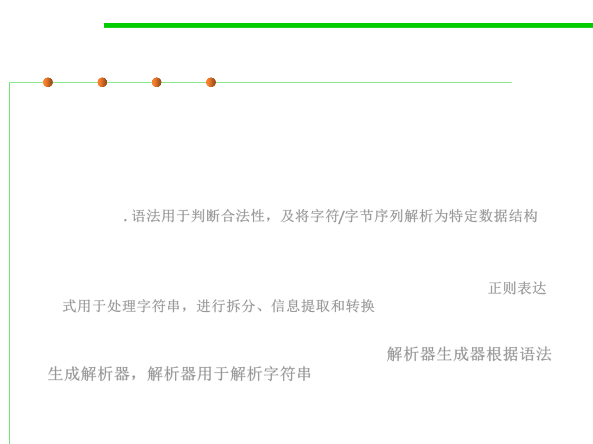

6.3 Maintainability-Oriented Construction Techniques
The notion of a grammar
▪ For these kinds of sequences, the notion of a grammar is a good
choice for design:
– It can not only help to distinguish between legal and illegal sequences, but
also to parse a sequence into a data structure a program can work with.
– The data structure produced from a grammar will often be a recursive
data type. 语法用于判断合法性，及将字符/字节序列解析为特定数据结构
▪ A specialized form of a grammar called a regular expression.
– It is a widely-used tool for many string-processing tasks that need to
disassemble a string, extract information from it, or transform it. 正则表达
式用于处理字符串，进行拆分、信息提取和转换
▪ A parser generator is a kind of tool that translate a grammar
automatically into a parser for that grammar. 解析器生成器根据语法
生成解析器，解析器用于解析字符串